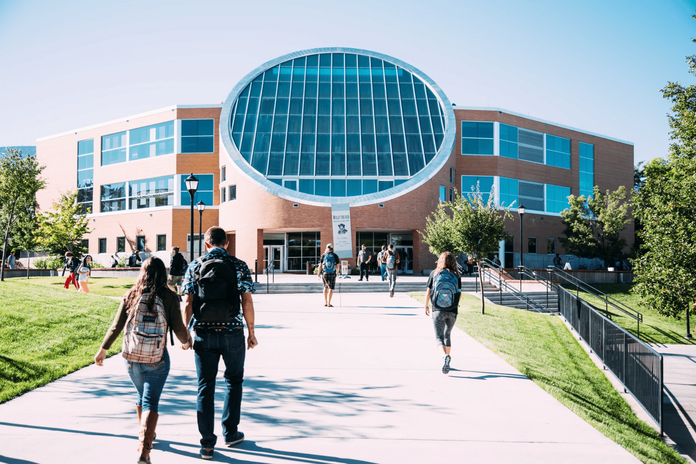

Serving students, families, and the Chinese community throughout Southern Utah.

We serve local Chinese college students through the Southern Utah Chinese Student Club (SUCSC) in Cedar City. Every Friday from 6–8 PM, we gather with students to share life, discuss faith, and care for one another.
We walk alongside students as they navigate academic challenges, career plans, and daily life in a new country. Students from Utah Tech and others interested in Chinese language and culture are always welcome.
Southern Utah is home to 15 schools offering Chinese Dual Language Immersion programs. More than twenty Chinese immersion teachers live and serve in our communities, investing in students and raising families here.
We desire to connect with them through shared faith and cultural heritage. We also build friendships with local families interested in Chinese culture, restaurant workers, university staff, and professionals from various fields.
Every Saturday, we offer a bilingual children's program where kids learn Chinese and Bible stories in a fun, loving environment.
Our teachers are professional educators from local Chinese immersion programs and devoted Christians. Children make new friends, grow in character, and explore faith in both English and Chinese.